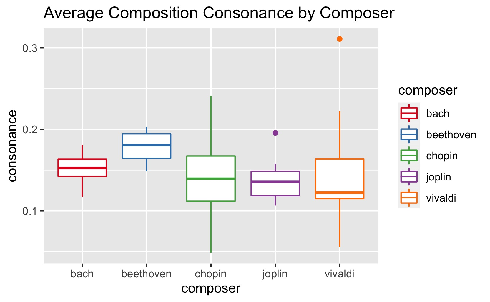
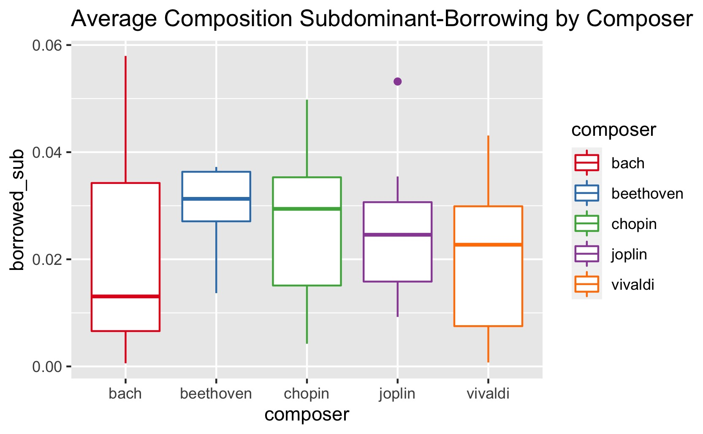
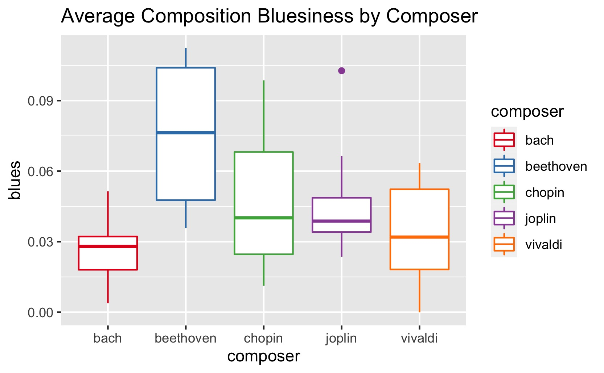
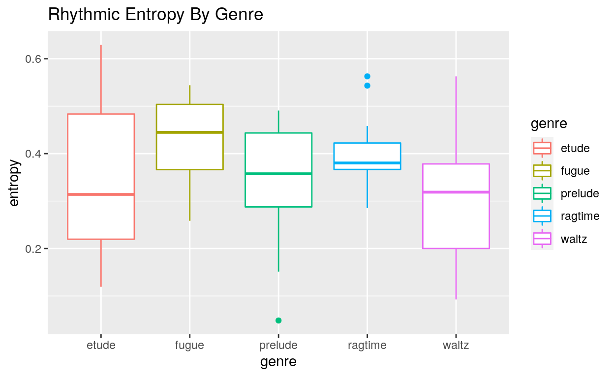
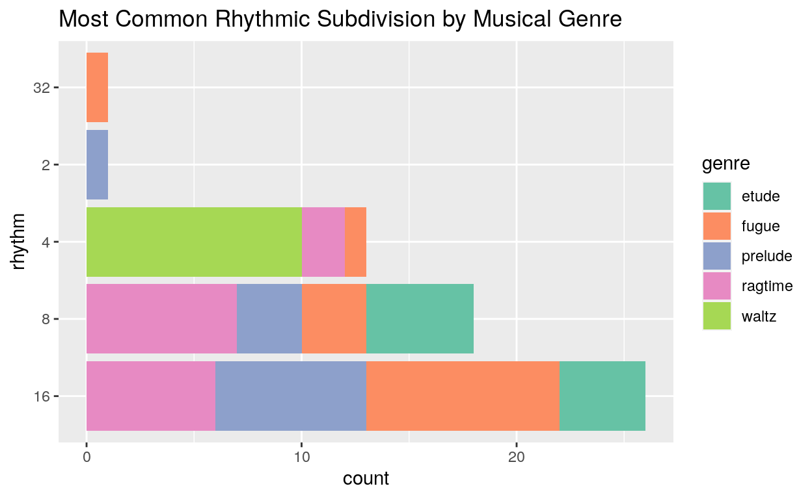

Stylometry catches anonymous authors by counting their word habits. In my junior year at Reed, a friend and I pointed the same idea at sheet music — and the composers gave themselves away.
There’s a BBC clip of a toddler identifying classical composers by ear. She hasn’t studied theory; she can’t tell you what a plagal cadence is. But something in Chopin reliably reads as Chopin to her, and something in Bach reads as Bach. Whatever that something is, it’s stable enough that a two-year-old’s pattern-matching can latch onto it.
That’s a claim about statistics, not just about music: style leaves fingerprints, and fingerprints can be counted. This report is the story of a project where I tried to count them.
Stylometry is the discipline of identifying authors by their measurable habits. The classic result is Mosteller and Wallace’s analysis of the Federalist Papers: the disputed essays were attributed to Madison not by their grand arguments but by their boring little function words — how often the author reached for “upon” versus “on.” Style, it turns out, lives less in what you say than in the tics you can’t help.
Musicians have tics too. Chopin loves borrowing the minor iv chord in a major key. Joplin’s rags lean into dissonances that would have made Vivaldi’s patrons squirm. If word frequencies can fingerprint an essayist, harmonic frequencies ought to fingerprint a composer.
In the spring of my junior year at Reed, my friend Lucas Yong and I got the chance to actually test this, as our final project for the data science course. The direct inspiration was the senior thesis of Emily Palmer (’18), who had built museR, an R package for turning sheet music into data frames. With her blessing, we refactored parts of museR and built our own harmony module on top of it. Everything below is joint work with Lucas — one of those collaborations where I genuinely can’t remember who wrote which half.
The first decision was what “music as data” even means. Audio is the obvious answer and the wrong one for this question — a recording confounds the composition with the performer, the instrument, and the room. We wanted the choices the composer actually wrote down, so we worked from sheet music in the Kern format: plain-text symbolic scores, of which kern.humdrum.org hosts over a hundred thousand.
A .krn file slices a piece into rows at the finest rhythmic grid the piece uses — if the fastest note is a sixteenth, a 4/4 bar contributes sixteen rows. Each row is a vertical slice of the score: every note sounding at that instant, plus the current key, meter, and measure. museR’s kern2df() turns that into a data frame, and suddenly The Entertainer is 588 rows × 45 columns and you can group_by() it like anything else.
Here’s the part of the project I’m still proud of. To measure harmonic habits you need to know each note’s scale degree — its role relative to the key. And scale degrees are where naive note-encoding falls apart, because of enharmonics: C♯ and D♭ are the same piano key but not the same musical object. Against a G, C♯ is an augmented fourth and D♭ is a diminished fifth — same sound, different grammar, and a composer’s choice of spelling encodes which grammar they meant.
So the heart of our module was a pair of functions: enharmonic(), which handles respelling (it knows Cb is B, and that E# is F), and scaleDegree(tonic, note), which classifies any note against any tonic — scaleDegree("C", "Eb") comes back as a flat third, scaleDegree("F#", "C#") as a perfect fifth. It sounds like a lookup table; it is in fact four source files of fiddly edge cases. Music notation is a legacy format with about eight centuries of backwards compatibility, and it fights you.
With scale degrees in hand, we scored every piece on four harmonic features — how often, per note, the composer reaches outside the plain major/minor palette, and in which direction:
Our corpus: fifteen-plus pieces each from Bach, Beethoven, Chopin, Joplin, and Vivaldi, plus fifteen-plus each from five genres — etudes, fugues, preludes, ragtime, and waltzes — for the rhythm analysis later.

The features genuinely separate the composers, and mostly in directions a musician would predict — which is exactly what you want from a sanity check.
The baroque composers behaved themselves: Bach and Vivaldi score lowest on bluesiness, which is reassuring, since blue notes weren’t really on the menu in 1720. Joplin tops the dissonance chart, befitting ragtime’s cheerful crunch. And my favorite result: Chopin sits near the top on subdominant borrowing. That minor-iv-in-major move is one of the signature sounds that makes Chopin sound like Chopin — it’s genuinely satisfying when a statistic you computed from plain-text files rediscovers something your ears already knew.

And then there’s the anomaly. Beethoven came out bluesiest — comfortably above Joplin, the man who wrote actual rags.

We treated that result with suspicion then and I still do: Beethoven’s was our smallest sample, because his Kern files gave the parser the most trouble. But we re-checked the pipeline and found no bug — the flat thirds and sevenths are really there in the pieces we sampled. Somewhere between “small-sample artifact” and “Beethoven’s chromaticism genuinely overlaps the blues scale,” there’s a real answer we never ran down. It remains my favorite kind of result: the one that’s probably wrong in an interesting way.
Harmony turned out to be where composers live; rhythm is where genres live. A waltz is a waltz whoever writes it. So for the rhythm module (this part built directly on Emily’s museR functions) we grouped by genre instead and measured rhythmic entropy — roughly, how unpredictable the beat-to-beat rhythm is.

Fugues score highest, by design — the form exists to push rhythmic and contrapuntal variation to its limits. Ragtime is the tightest cluster: the genre has a groove and stays in it. And etudes span the whole range, which makes sense once you remember what an etude is — a lesson. An etude drilling harmony can be rhythmically inert; an etude drilling polyrhythm is chaos by construction.
The cleanest single result in the whole project, though, is this one:

Every other genre spreads across eighths and sixteenths, but every single waltz in the sample has the quarter note as its most common subdivision — zero variation. Which is to say: the analysis rediscovered the definition of a waltz. ONE-two-three, straight out of the data frame.
This project is five years old, and I’ve since finished a master’s in statistics, so I owe 2021-me an honest review. The feature engineering holds up — scale-degree classification was the right hard problem to solve, and the features are musically meaningful rather than merely convenient. What doesn’t hold up is the inference: we compared distributions by eyeballing boxplots, with no uncertainty attached, and never held out test data. The real test of a fingerprint isn’t “do the boxplots look different” — it’s attribution: train a classifier, hand it a piece it has never seen, and see if it can name the composer. With these five features I’d bet on it beating chance comfortably; how comfortably is exactly the question worth answering.
The upgrade list writes itself from there: pool pieces within composers hierarchically instead of averaging per piece and hoping; treat harmony as a process by tracking features measure-by-measure through a piece rather than as one bag of notes per score; and scale the corpus up, since kern.humdrum.org has a hundred thousand scores and we used about a hundred and fifty.
And there’s a destination worth aiming at. The reason Emily’s thesis stuck with me is a genuinely open attribution problem: several pieces published under Felix Mendelssohn’s name are suspected to be the work of his sister, Fanny Hensel. Musicologists argue from letters and circumstance. A harmonic fingerprint good enough to attribute held-out pieces would get to cast an actual, quantified vote. That’s the dream version of this project, and it still feels reachable.
Code & data: github.com/Reed-Math241/music_stylo — and there’s an interactive explorer of the composer distributions at ali-taqi.com/projects/music-stylometry. museR is Emily Palmer’s package; the harmony module and the analysis above were built with Lucas Yong, to whom half the credit belongs.
I keep coming back to what the toddler in that BBC clip already knows: style isn’t mystical. It’s a distribution, and everybody’s sampling from their own. She learned hers from listening. Ours took four R files and an enharmonic edge-case function — but we got to see the fingerprints.